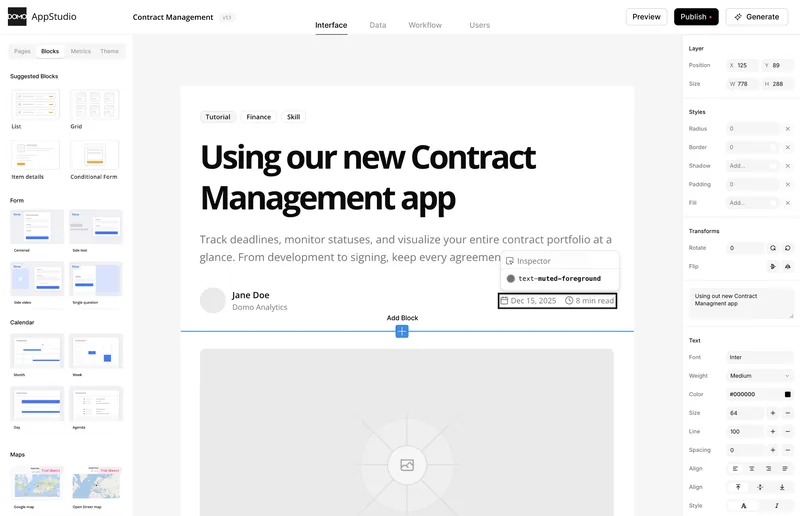
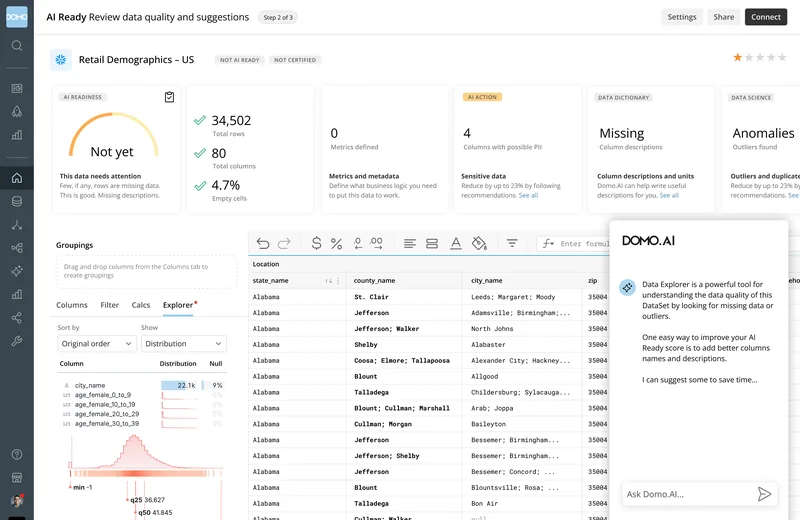
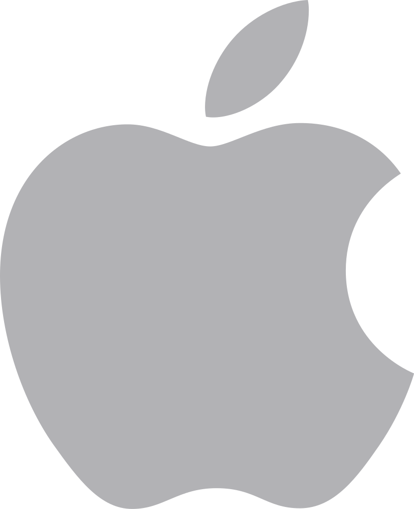
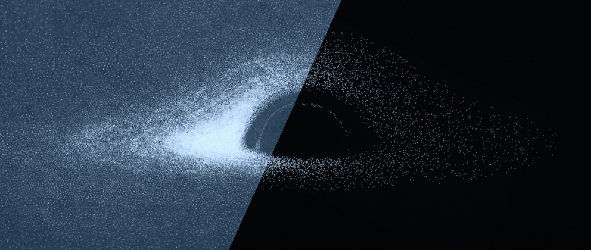

2026 Intent Engine
Giving AI agents the business context to act on what people mean
I'm a strategic design leader building products that feel genuinely human.
I'm the founding Chief Design Officer and Futurist at Domo. For 15 years I've helped build one of the first cloud-native, mobile-first data platforms, and now governed, agentic AI that real people can actually use. I take a first-principles approach to AI and innovation, starting with the human problem instead of the cool demo.
A curated selection of work, with more on the way...
Giving AI agents the business context to act on what people mean
A visual canvas for designing, generating and publishing data apps

Showing people what to fix before their data meets AI

The full story is on LinkedIn.

If you're building the future of work, or just looking for a spirited chat about it, let's talk.
